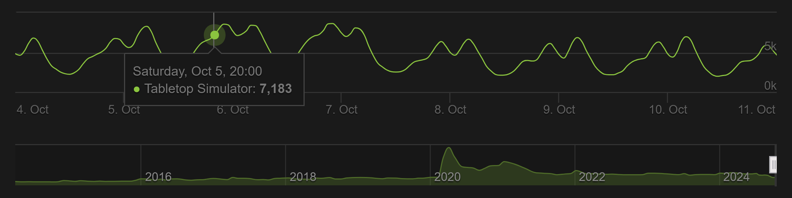

Csoport neve: EOF
Feladat sorszáma: 2
Feladat címe: Társasjáték készítő platform
Vízió
Gyakorlatvezető:
Mileff Péter
Csoporttagok:
|
Név |
Neptunkód |
E-mail cím |
|
Baba Levente |
HLFA5R |
babalevi2018@gmail.com |
|
Erdélyi Péter |
JH3V7T |
petike096@gmail.com |
|
Halász Máté Sándor |
T1TNWL |
maseny0@gmail.com |
|
Molnár Márk |
TLZ12Y |
molnar.mark.144@gmail.com |
|
Soltész Viktor |
F2UJS6 |
solteszviktor01@gmail.com |
2024. október 16.
Verziótörténet
|
Verzió |
Leírás |
Szerző |
|
|
2024. 10. 03. |
0.05 |
Üzleti lehetőségek felmérése |
Soltész Viktor |
|
2024. 10. 06. |
0.1 |
2. fejezet kidolgozása |
Halász Máté Sándor |
|
2024. 10. 09. |
0.3 |
4. és 5. fejezetek kidolgozása |
EOF |
|
2024. 10. 11. |
0.4 |
3. fejezet kidolgozása |
Halász Máté Sándor |
|
2024. 10. 11. |
0.5 |
Vázlatok összefésülése |
Erdélyi Péter |
|
2024. 10. 13. |
0.7 |
6. és 7. fejezetek kidolgozása |
Erdélyi Péter |
|
2024. 10. 14. |
0.8 |
8. és 9. fejezetek kidolgozása |
Erdélyi Péter |
|
2024. 10. 15. |
0.85 |
Költségbecslés elkészítése |
Soltész Viktor |
|
2024. 10. 15. |
1.0 |
Formázás, véglegesítés |
Erdélyi Péter |
|
2024. 10. 19. |
1.1 |
HTML olvashatóság javítása |
Erdélyi Péter |
|
2024. 10. 24. |
1.1.2 |
5. alfejezetek kiegészítése |
Erdélyi Péter |
|
2024. 10. 27. |
1.2 |
A termék backend felépítése |
Baba Levente |
|
2024. 10. 27. |
1.3.1 |
A prémium szolgáltatások alfejezet kidolgozása, a szótár bővítése |
Erdélyi Péter |
Tartalomjegyzék
2.3. A probléma megfogalmazása
2.4. Az elkészült termék helye
3.1. Az érintettek összefoglalása
3.2. A felhasználók összefoglalása
3.4. Illetékesek és felhasználók adatai
4.2. A termék backend felépítése
4.3. A termék használatának előnyei
4.4. A termék prémium szolgáltatásainak igénybevétele
4.5. Feltételezések és függőségek
5. A végtermék jellemzői, biztosított szolgáltatások
5.1. Társasjáték készítő/szerkesztő (editor)
5.2. Társasjátékban való részvétel (session)
5.3. Társasjáték böngésző (workshop)
5.4. Játékos könyvtára (library)
7.1. A felhasználók szemszögéből
7.2. A fejlesztők szemszögéből
EOF csapatunk projektmunkájának témája egy társasjáték készítő webes platform tervezése. A projekt célja mindenekelőtt egy olyan platform teremtése, amely lehetővé teszi a felhasználók számára, hogy saját társasjátékokat hozzanak létre, megoszthassák azokat másokkal, és online játszhassanak velük. Az alkalmazás felhasználóbarát felülettel rendelkezik, ahol a társasjátékok könnyen szerkeszthetők és session-ök indíthatók, amelyeken keresztül mások is csatlakozhatnak a játékhoz. Ez az applikáció közös megegyezés alapján a „Crafting Table” nevet kapta, a dokumentum(ok) további fejezeteiben pedig ezen névvel fogunk rá hivatkozni.
A Crafting Table számos funkciót kínál majd a felhasználóknak, melyek közül a legfontosabbakat az alábbi pontokban gyűjtöttük össze:
· társasjátékok készítése és megosztása,
· session alapú játékok,
· multiplayer támogatása a barátrendszeren keresztül,
· felülnézetes tervezői felület 3D-s animációkkal,
· mobil kompatibilitás.
Igyekszünk az egyszerűséget, elérhetőséget és testreszabhatóságot oly módon ötvözni, melynek köszönhetően sikerül kiemelkedni a piacon a vetélytársak hasonló termékei közül.
Pénzügyi oldalról tekintve a projektet, a monetizációs modell egy előfizetési rendszer alapján működik. A felhasználók számára a társasjátékok készítése, valamint a session-ökhöz való csatlakozás ingyenes. Két különböző szerveropció érhető el: az egyik egy ingyenes, ugyanakkor kisebb kapacitású és várólistás szerver, míg a másik egy nagyobb, előfizetéssel igénybe vehető szerver, garantált session indítással és bónusz funkciókkal. Az előfizetési módok havi és éves opciókat kínálnak, a hosszabb időtáv választása pedig valamekkora kedvezményt nyújt. Terveink szerint az előfizetőket több szintre osztjuk szét, ahol a különböző szintek különféle prémium szolgáltatásokat tartalmaznak, és a magasabb kategóriákban lévők értelemszerűen hozzáférnek az alattuk lévő előfizetés által biztosított lehetőségekhez is.
A fejlesztés előreláthatólag több évet fog igénybe venni, melynek során jó néhány lényeges rendszert kell kidolgozni. Először is szükséges az alapfunkciók implementálása, pl. a regisztráció és hitelesítés, illetve a platform felhasználói felületének létrehozása. Ezt követően foglalkozni kell a játékmenet kezelésének és az adatok tárolásának kérdéskörével, pl. session-ök esetében. Végül, de nem utolsó sorban szükséges kialakítani a fizetési folyamatot, valamint a felhő integrációt.
A Crafting Table nagyrészt a fiatal felnőtteket célozza meg, mivel ők még rendelkeznek a szabadidővel, ami egy saját társasjáték elkészítéséhez és az abban történő részvételhez szükséges, valamint a keresettel, ami egy előfizetésre való feliratkozáshoz kell. Tehát a célközönséget a 18 és 34 év közöttiek alkotják.
Viszont nem hagyjuk figyelmen kívül a többi korosztályt sem, ezért egy családbarát opciót is nyújtunk szülőknek, akik a gyerekeikkel szeretnének játszani. Ezt egy szűrő- és report rendszer segítségével tervezzük lebonyolítani, amely egy második lépcsős védelmet ad és megerősíti azt, hogy a családbarát szekcióba nem jut helytelen tartalom.
A Crafting Table platform kitűzött céljai közé tartozik természetesen az anyagi haszonszerzés is. Csapatunk úgy véli, hogy egy ilyen applikációban a jelenlegi piaci viszonyok mellett hatalmas potenciál rejlik, amit szeretnénk kihasználni.
Az üzlet bővítésének számos módja kínálkozik. Egy ilyen lehetőség lehet például felvenni a kapcsolatot társasjáték készítő cégekkel. Alkalmat biztosítunk arra, hogy egy tesztelés alatt álló termékük elérhető legyen a workshop felületén, az üzleti partner pedig viszonzásul részesül a profitnak egy előre megállapított részéből. Ha a társasjátékuk népszerű lesz, egy promóció keretén belül a fizikailag megvásárolt termék mellé jár egy 1 hónapos ingyenes előfizetés. Ezáltal szélesíthető a Crafting Table minőségi társasjátékainak készlete és nemcsak a partnernek, hanem a platformnak is reklámot jelentene.
Egy másik lehetőség minél több befektető szerzése. Ha képesek vagyunk őket meggyőzni, hogy a Crafting Table-be érdemes beruházni, akkor az így kapott tőke jelentősen hozzájárulhat a projekt sikerességéhez. Célszerű felhívni a figyelmüket arra, hogy a mi oldalunk mivel kínál többet, mint a konkurenciáé, így növelhető a befektetési hajlandóságuk.
2.3. A probléma megfogalmazása
Manapság egyre jobban elkezdett a felszínre törni az úgynevezett "tabletop scene". Viszont ahhoz, hogy valaki egy modern társasjátékot játsszon, az embernek több tízezer forintot kell költenie, hogy beszerezze magát a játékot, és órákat kell szánnia arra, hogy megszervezzen egy olyan napot, amikor a csapat össze tud ülni. Ez utóbbi gyakran nem kivitelezhető, mert nehéz olyan időpontot találni, ami mindenkinek alkalmas. Éppen ezért egy online felület lényegesen könnyebbé tenné a társasjátékok lebonyolítását.
A modern társasjátékok világa felvet egy másik problémát is, méghozzá azt, hogy egy átlagos embernek nincs eszköze a saját egyedi játékának tervezésére. Nagyon széles már a társasjátékok kínálata a boltokban, az egyszerű dámától kezdve egészen a komplex RPG-ig, ellenben csak vásárolni lehet belőlük, maga a kreatív alkotás emiatt elmarad. Ebből adódóan sokan örülnének annak, ha nemcsak készen kapható játékok léteznének, hanem egy olyan rendszer is, ami egy üres keretet adna bármilyen társasjáték készítéséhez.
Az érintettek közé sorolhatók még a társasjáték készítő cégek is. A probléma az ő szemszögükből nézve teljesen más: hogyan tudják elérni, hogy az általuk tervezett társasjáték minél szélesebb közönséghez eljusson? Hogyan kaphatnak visszajelzést arról, hogy a játékmeneten vagy szabályokon belül mennyit kellene változtatni ahhoz, hogy a minőséget javítani tudják? A Crafting Table ebben támogatja nemcsak az induló vállalkozásokat, hanem a közismertebb szervezeteket is.
2.4. Az elkészült termék helye
Az imént tárgyalt problémákra mi egy megoldást biztosítunk azzal, hogy az emberek és cégek számára egy olcsó, webes alapú applikációt adunk, amiben több tíz társasjáték érhető el alapértelmezettként, továbbá lehetőséget adunk arra, hogy a saját ötleteiket megvalósítsák egy fejlesztői felület segítségével. Ez a koncepció közel sem egyedi, hiszen számos más fejlesztői csapat csinált már ehhez hasonló társasjáték fejlesztő és játszói programot, mint például: Tabletop Simulator, Tabletop Playground, valamint egy pár webes felület, mint a Screentop.gg vagy éppenséggel a FoundryVTT vagy Roll20, ezen utóbbiak viszont az RPG játékokra specializálódnak.
Ahogyan már korábban említettük, a Crafting Table platform alapgondolata nem teljesen egyedülálló, mert a piacon már fellelhető néhány hasonló alternatíva. A gond ezekkel a programokkal azonban a magas gép- és hozzáértés igényük. A vetélytársak alkalmazásai gyakran megkövetelik a felhasználóktól, hogy jártasak legyenek valamilyen szkriptnyelv írásában a játékszabályok kreálásához, vagy olyan hardveres elvárásokat támasztanak, amely a felhasználók egy bizonyos rétegének nehézséget okoz a futtatásnál. Mindemellett rendszeresen hiányoznak olyan funkciók, amelyek a fogyatékkal élők részére kritikusak, hogy a programot ők is hátrányok nélkül tudják használni. A mi applikációnk ezekkel ellentétben egy tökéletes vonalat húz a komplexitás és az egyszerű használhatóság között, a megunhatatlan vizuális kinézet és az alacsony gépigény között.
A Crafting Table egy könnyen kezelhető, felhasználóbarát környezetet nyújt mindazok számára, akik a barátaikkal szeretnének társasjátékokat játszani, valamint akik próbára tennék saját játék dizájn tudásukat, és alkotnának egy saját társasjátékot. A társasjáték tervező használatához nem szükséges semmilyen programozói tudás; előre elkészített sémák segítségével és azok manipulálásával, illetve személyre szabható elemek hozzáadásával történik a fejlesztés. Összegezve: a Crafting Table mind egy játékfelületet, mind egy fejlesztői felületet biztosít a felhasználók részére.
3.1. Az érintettek összefoglalása
A rendszer által érintett személyek alapvető jellemzőit az 1. táblázatban foglaltuk össze.
|
Leírás |
Szerep |
|
|
Moderátor |
Rendfenntartó |
A közösségi fórumokon, valamint a játékon belül ügyel a felhasználókra és a szabályok betartására. A nem megengedett tartalmakat szűri és a felelős felhasználókat bünteti. |
|
Közösség menedzser |
Elégedettség biztos |
Felméréseket tart a felhasználók között egyes frissítések és funkciók implementációja után. Ő áll a legközelebb a felhasználókhoz. |
|
Weblapszerkesztő |
Karbantartó |
A weblap folyamatos karbantartása és frissítése új információkkal a legújabban kiadott verzióról. |
|
Szerkesztő |
Változási napló felelős |
A fejlesztői csapat által összeírt változási dokumentumok összevetése, tömörítése és összeszerkesztése a felhasználók számára. |
1. táblázat: Az érintettek összefoglalása
3.2. A felhasználók összefoglalása
A Crafting Table platformon várhatóan megjelenő felhasználók a 2. táblázatban szerepelnek.
|
Elnevezés |
Leírás |
Szerep |
|
Előfizetés nélküli felhasználó |
Ingyenes funkciók használata |
Társasjátékokat szerkeszt, azokat esetlegesen megosztja. Böngészik a workshop felületén. Session-öket indít vagy azokba csatlakozik. |
|
Előfizetéses felhasználó |
Prémium funkciók használata |
Megegyezik az előfizetés nélküli felhasználóval, de olyan kiegészítő szolgáltatásokat is igénybe vesz, amihez előfizetés hiányában nem férhet hozzá. |
|
Cégek, vállalkozások |
Üzleti partner |
Teszteli a prototípus társasjáték működését. Visszajelzést kap a felhasználóktól. Promóciót hirdet, hogy népszerűsítse a fizikai terméket. |
2. táblázat: A felhasználók összefoglalása
Terveink szerint az alkalmazás maga egy webes applikációként jelenik meg, és minél több böngészőt támogat. A jövőre nézve viszont egy Android-os, valamint iOS-es applikációt is készíteni fogunk a hordozhatóság szempontjából, ám erre egyelőre megkötéseket vezetnénk be hardveres limitációk miatt (telefonok kijelzői túl kicsik, editor UI nem működne megfelelően vagy kényelmetlen lenne használni, stb.). A Crafting Table ökoszisztéma tehát ezeken a platformokon fut majd, amik várhatóan nem fognak a jövőben változni.
A felhasználók számának becsléséhez tekintsük az 1. ábrát, amin az egyik legnagyobb vetélytársunknak, a Tabletop Simulator-nak látható a játékosszám-eloszlása a dokumentáció készítésének idejében.

1. ábra: A Tabletop Simulator óránkénti játékosszám-eloszlása [Steam Charts]
Arra számítunk, hogy a konkurens platformhoz hasonlóan induláskor egyszerre több száz felhasználó lesz jelen és játszik, mivel a felhasználó a saját gépét használva tudna egy session-t létrehozni, és a saját erőforrásait fordítaná a szerver futtatására. A jelenlegi szervereink (tárhelykapacitás szempontjából) maximálisan ~3000 felhasználót tudnak ellátni, amely nem különbözik túlságosan a Tabletop Simulator grafikonján látható adatoktól (átlagosan 4000-5000 játékos). Úgy gondoljuk, hogy a felhasználók száma folyamatosan fluktuáló lesz, ahogyan ezt az ábra is mutatja, mivel az emberek nem feltétlen naponta játszanak társasjátékokat, így a legnagyobb forgalom valószínűleg hétvégénként, azon belül is délutánonként és esténként várható. Ha nő az igény, akkor egyértelműen hajlandóak vagyunk bővíteni és befektetni.
Reménykedünk abban, hogy a társasjáték készletünk gyarapodásával, valamint a felhasználók által létrehozott játékokkal sikerül majd az emberek érdeklődését fenntartani, és motivációként is fognak hatni egymásra, hogy elkezdjék az alkotás folyamatát. Így játékosok szempontjából egy játékos hetente kétszer, háromszor is látogathatja a Crafting Table oldalát; egy fejlesztő pedig akár napi szinten is felmehet a weboldalunkra. Mivel ez egy szórakoztató jellegű applikáció, ezért a használati idő csakis a felhasználó szabadidejétől függ.
A célunk, hogy egy univerzális programot hozzunk létre, amely bármely otthoni asztali számítógépen és telefonon egyaránt el tud futni. Speciális hardver, amire egy felhasználónak legfeljebb szüksége lehet egy számítógépen kívül, az egy internetelérést biztosító eszköz. A fejlesztők, vagyis a mi szemszögünkből nézve pedig fontos a szervergépek beszerzése. Jelenleg mi csak tárhelyet és session kezelést adunk, viszont a jövőben szeretnénk biztosítani külön szervereket, amelyek segítségével a felhasználók képesek lennének host-olni, hogy ne a saját gépük erőforrásait eméssze fel az alkalmazás. Ez az opció attól függően, hogy milyen terhelés alá kerülnek a szerverek, akár fizetőssé is válhat a későbbiek során.
Várhatóan az előfizetéses rendszer implementálásához a pénzügyeket rá szeretnénk bízni a szakértő partnerekre, így az Európában legtöbbet használt fizetési módszereket tesszük elérhetővé: PayPal, SimplePay, MasterCard. A regisztráció és bejelentkezés megkönnyebbítésére felajánljuk a Facebook, Gmail és Discord felhasználói fiókon keresztül történő regisztrációt és bejelentkezést. A Facebook esetén azon emberek az ismerősök közül, akik szintén összekötötték a Crafting Table és Facebook fiókjukat, megjelennek majd a baráti listán, így még egyszerűbb lesz barátokkal játszani és/vagy tervezni.
3.4. Illetékesek és felhasználók adatai
Lásd: Projektterv dokumentum 1. fejezet („Csoport tagjai, struktúrája”)
A Crafting Table az alábbi főbb komponensekből tevődik össze:
1. szerkesztő (editor),
2. mérkőzés lebonyolító (session manager),
3. böngésző (workshop),
4. könyvtár (library).
Ezeket a komponenseket az 5. fejezet részletesebben tárgyalja. A Crafting Table továbbá egy teljesen önálló egységet alkot, vagyis nem része egy tőle nagyobb rendszernek. Ugyanakkor a social login integráció révén kapcsolódási pontjai közé tartoznak a Google, Facebook és Discord platformjai.
4.2. A termék backend felépítése
A backend rendszerünk a társasjáték készítő platform alapvető motorja, amely biztosítja a Crafting Table megbízható működését és az adatok kezelését. A társasjátékok adatait egy külső felhő szolgáltatásban tároljuk, míg az adatbázisban tároljuk a profiladatokat, valamint a játékok szabályait és állapotát. Az adatbázis struktúrája úgy kerül megtervezésre, hogy rugalmasan és hatékonyan kezelje a különböző játéktípusokat és azok paramétereit.
A szerver feladata, hogy fogadja a felhasználói kéréseket, továbbá megfelelően kiszolgálja azokat. A szerverkapcsolat közvetít a felhasználók, a frontend és az adatbázis között, ezáltal biztosítva, hogy a felhasználói műveletek, mint például egy játék létrehozása vagy módosítása, valós időben történjenek meg.
Az applikáció backend oldala végzi a játéklogika végrehajtását, a felhasználói kérések feldolgozását, valamint az adatok validálását és ellenőrzését. Ez a rendszer biztosítja a platform zökkenőmentes működését, garantálva, hogy minden adatkezelés és játékművelet biztonságosan és megbízhatóan valósuljon meg. A backend tehát az a láthatatlan erő, amely a teljes rendszerünk hátterében dolgozik, hogy a felhasználók zavartalanul élvezhessék a mérkőzések és játékfejlesztés élményét.
4.3. A termék használatának előnyei
A Crafting Table webes platform használata számtalan előnnyel jár, magánszemélyek és üzletek számára egyaránt. A termék használatából származó előnyöket a 3. táblázat részletesen bemutatja.
|
A megrendelő haszna (előnyei) |
Az ezt támogató rendszer jellemző(k) |
|
Kellemes időtöltést nyújt. |
· A felhasználók saját társasjátékaikat teljesen személyre szabhatják. · A játékosok szabadon hozhatnak létre vagy csatlakozhatnak be session-ökbe. · A workshop felület lehetővé teszi a mások által feltöltött tartalmak böngészését. |
|
Alacsony a hardverkövetelménye. |
· Egy 10 éves processzornak sem okoz gondot a futtatása. · A 2D-s megjelenítés csökkenti a videókártyára eső terhelést. |
|
Nem igényel előzetes speciális tudást. |
· A szerkesztő UI-on belül az elemek drag-and-drop módszerrel könnyedén beilleszthetők. · Előre elkészített sémák segítik a tervezés folyamatát. · A szabályrendszer megalkotásához nem szükséges szkriptnyelven programozni. |
|
Korlátozott képességűek is használhatják. |
· Bekapcsolhatók olyan funkciók, amelyek lényegesen csökkentik a programhasználat során felmerülő nehézségeket (pl. narrátor, színvak megjelenítés, feliratozás, epileptikus hatások letiltása). |
|
Fejlődési lehetőséget teremt játék dizájn terén. |
· A társasjátékok összeállítása és tesztelése kockázatmentes. · A készítő további kreatív ötleteket kap a tervezés közben. |
|
Alkalmas prototípus társasjátékok tesztelésére. |
· Egy tesztelés alatt álló társasjáték is megosztható a workshop-ban. · A felhasználók visszajelzést adnak értékelések és kommentek formájában. |
3. táblázat: A termék használatából származó előnyök
4.4. A termék prémium szolgáltatásainak igénybevétele
Korábban már megjegyeztük, hogy a Crafting Table az alapvetően ingyenes szolgáltatások mellett prémium funkciókat is kínál a felhasználóknak, azonban ezek igénybevétele előfizetéshez kötött. A következőkben felsorolunk néhány előnyt ezek közül:
· nagyobb tárhely a társasjátékok kezelésére,
· várólista nélküli szerverek,
· automatikusan generált szkriptprogram szerkesztése és exportálása,
· egyéni animációk, emotikonok és szövegkiemelés a chatablakban.
A felhasználókat külön szintekre tervezzük bontani, másnéven egy tier rendszert szeretnénk kialakítani. A magasabb szintek több bónusz szolgáltatást biztosítanak majd, és az előfizetők hozzáférést kapnak az adott tier alatti extra funkciókhoz is. A szintek között természetesen lesz lehetőség szabadon mozogni, az előfizetés pedig bármikor lemondható.
A feliratkozáshoz szükséges fizetési folyamatot third party (PayPal, SimplePay) segítségével fogjuk lebonyolítani. Első lépésben a felhasználó kiválasztja a számára megfelelő előfizetési fokozatot, az ehhez tartozó időtartamot, illetve a kívánt fizetési módszert. Ezt követően átirányítjuk a third party felületére, ahol a költségkiegyenlítést biztonságos módon el tudja végezni. Amint a folyamat sikeresen befejeződött, úgy a prémium szolgáltatások aktiválásra kerülnek, így az előfizető rövid időn belül hozzáférést kap ezekhez.
4.5. Feltételezések és függőségek
A projekt teljesítéséhez kapcsolódóan feltételezzük, hogy:
· a projekt befejezése legfeljebb 2-3 évet vesz igénybe,
· az alapító tagok közül nem távozik senki a projekt vége előtt,
· a felhasználható pénzügyi keretet nem lépjük túl.
Technikai függőségeket okozhatnak az alábbiak:
· Android és iOS operációs rendszerek támogatása,
· Google, Facebook és Discord platformok integrálása,
· a fejlesztéshez használt nyelvek és könyvtárak (pl. Node.js, React) megszűnése.
A költségbecslés elvégzéséhez először össze kell gyűjteni azokat a tényezőket, melyek hatására kiadások keletkeznek. A Crafting Table fenntartásához szükség van egy szerverre, amit az EOF a tervek alapján saját költségére fog megvásárolni és üzemeltetni, magához a weboldal létesítéséhez pedig szükség lesz még egy domain-re is. Biztosítani kell továbbá a működési tevékenységhez elengedhetetlen helyet. Itt célszerű egy erre a célra kijelölt irodát vásárolni, aminek nem szabad megfeledkezni a rezsiköltségéről sem. Végül, de nem utolsó sorban számításba kell venni a saját munkánk után járó bérünket és egyéb juttatásokat (pl. biztosítás, SZÉP kártya stb.). Mindezek figyelembevételével az előzetes költségbecslés a következőképpen alakul:
· szerver: 125.000 ÷ 5.000.000 Ft, 2 db szerver vásárlása esetén 10.000.000 Ft,
· domain: 2.500 Ft, fenntartási díja 750 ÷ 5.000 Ft/év, 3 évre összesen 17.500 Ft,
· iroda: 66.000.000 ÷ 200.000.000 Ft,
· rezsi: ~ 50.000 Ft/hó, 30 hónapra vetítve 1.500.000 Ft,
· munkaerő: bruttó 618.000 Ft/fő/hó, 5 emberrel és 30 hónappal számolva 92.700.000 Ft,
· juttatások: 20.000 Ft/fő/hó, 5 emberrel és 30 hónappal számolva 3.000.000 Ft.
Mindent összevetve: 307.217.500 Ft + 3.240.000 Ft/hó + 5.000 Ft/év
Az így kapott összeg egy becsült elméleti felső határ. Természetesen előfordulhatnak előre nem látható költségek is, de az EOF úgy véli, hogy ez a keret viszonylag könnyedén tartható.
A Crafting Table-t asztali környezetben nem szükséges telepíteni, hiszen a platform az interneten elérhető. Mobileszközöknél viszont már árnyaltabb a helyzet: az applikációhoz a telepítést követően lehet hozzáférni. Android telefonok esetén az alkalmazást a Google Play Store-ból, míg iOS operációs rendszereknél az App Store-ból lehet majd letölteni.
5. A végtermék jellemzői, biztosított szolgáltatások
5.1. Társasjáték készítő/szerkesztő (editor)
· projektek menedzselése
v új (üres) projekt létrehozása
v létező projekt megnyitása
v projektek törlése
v projektek átnevezése
v jelenlegi projekt elmentése
v megosztás workshop felületen
v statisztikák megtekintése
v automatikusan generált szkriptprogram exportálása (cégek esetén)
· műveletek játékelemekkel
v másolás, kivágás
v törlés
v átnevezés
v mozgatás
v tulajdonságok megtekintése (pl. nagyság, szín, hozzárendelt szabályok)
· játékosszám beállítása
· játékmenet manipulálása
v időzítő beállítása
v körök/fordulók/fázisok számának rögzítése
v körök/fordulók/fázisok kisebb egységekre bontása
v időegységek közötti sorrend megváltoztatása
v időegységek hozzárendelése tetszőleges játékosokhoz
v megszakításkezelés (rendhagyó lépésátadás, láncesemények eshetősége)
· kategória kiválasztása
· győzelem és vereség feltételeinek meghatározása
v kártyák vagy zsetonok kigyűjtése
v kártyaszám figyelése pakliban vagy kézben
v adott mezőre lépés egy bábuval
v pontszám elérése
v pontszámok összehasonlítása adott fordulóban
v erőforrás (pl. életpont) lenullázódása
v kockadobás eredménye
v egy megadott alakzat felépítése
v szó kitalálása
· erőforrások nyomon követése
v kiinduló mennyiség beállítása
v tartomány vagy limit megadása
v esemény hozzárendelése egy megadott határhoz
v megjelenítés kiválasztása
v többkomponensű erőforrások támogatása
· játéktér szerkesztése
v típus kiválasztása (fix, dinamikusan változó, moduláris)
v kész tábla importálása saját könyvtárból vagy workshop-ból
v templétek használata
v előre adott alakzatok beillesztése
v egyéni alakzat létrehozása
v mezők/zónák testreszabása (feliratozás, nagyság, háttér)
v különböző játékelemek hozzáadása
v szabályok játékelemekhez történő hozzárendelése
· számtalan játékelem támogatása
v kártyák
- meglévő kártyajáték importálása saját könyvtárból vagy workshop-ból
- templétek használata
- kártyamezők tartalmának szerkesztése
- kártyamezők elrendezésének módosítása
- szöveges és képi input elfogadása
v zsetonok, érmék, korongok
- alakzat és nagyság beállítása
- különböző színek előállítása (színkeverő)
- oldalak tartalmi egyezőségének bejelölése
- szöveges és képi input elfogadása
v kockák
- oldalak számának megadása: klasszikus 6 oldalú vagy egyéb (4, 8, 10, 12, 20 oldalú)
- különböző színek előállítása (színkeverő)
- pöttyök, számok vagy más szimbólumok használata
v bábuk, figurák, miniatűrök
- előre megadott készletből való választás (pl. sakkbábuk)
- kész modellek importálása saját könyvtárból vagy workshop-ból
- modellek szerkesztése
v csempék, dominók, betűk
- előre megadott készletből való választás
- meglévő modellek importálása saját könyvtárból vagy workshop-ból
- oldalak tartalmi egyezőségének bejelölése
v jegyzettömb
- dinamikusan növekvő hely biztosítása
- gépeléshez egyszerű szövegszerkesztő
- rajzoláshoz érintőképernyős és érintőtollas támogatás
5.2. Társasjátékban való részvétel (session)
· session létrehozása
v session-höz való csatlakozás játékosként
v session-höz való csatlakozás megfigyelőként
v automatikus kezdés időpontjának beállítása
v játékosszám limitálása
· sessionkezelés
v baráti meghívó küldése
v átmeneti szüneteltetés
v idő előtti befejezés
v aktuális állapot lementése
v korábbi játék visszatöltése
· írásos chat használata
v üzenetek státusza (kézbesítés állapota, elolvasott, szerkesztett)
v láthatóság korlátozása (pl. ellenséges csapat nem látja az üzenetváltásokat)
v különböző emotikonok és reakciók küldése
v gépelést jelző animáció vagy ikon
v képek megosztása
· élő közvetítés lehetősége (mikrofonon és/vagy webkamerán keresztül)
v mikrofon
- hangerő szabályozása
- zajszűrési fokozat kiválasztása
- push-to-talk bekapcsolása
- némítási opció
v webkamera
- közvetítés minőségének testreszabása (felbontás, képfrissítés, kodek)
- háttér lecserélése
- megjelenítés átmeneti kikapcsolása
5.3. Társasjáték böngésző (workshop)
· böngésző felületen
v társasjátékok kilistázása
v társasjátékok rendezése (értékelés, népszerűség, dátum alapján)
v társasjátékok közötti keresés
v társasjátékok szűrése választható szempontok szerint
· adott társasjátékra lépve
v letöltés a saját könyvtárba
v mentés a kedvencek közé
v értékelés egy skálán
v komment írása
v hibajelentés küldése
5.4. Játékos könyvtára (library)
· saját tartalom
v leírás módosítása
v fényképek feltöltése
v címkék hozzáadása
v láthatóság beállítása
· más felhasználók tartalmai
v törlés a könyvtárból
v mentés a kedvencek közé
v workshop oldal megnyitása
v saját kommentek megtekintése
v saját értékelés módosítása
Mivel a Crafting Table egy teljesen online szolgáltatás, ezért az elsődleges szempont a korlátozások tekintetében a biztonság. A weboldalon lévő biztonságos kommunikációhoz HTTPS titkosítás szükséges. A bejelentkezés során a felhasználói jelszavakat is szintén titkosítás útján kell tárolni, az autentikáció további részeként pedig lehetőséget kell adni a kétfaktoros hitelesítésre.
A weboldalra történő regisztráció során adatokat kell gyűjtenünk a felhasználókról, illetve azokat a későbbi felhasználhatóság érdekében tárolni kell. Az Európai Unió az adatkezelésre és -védelemre vonatkozóan magas szintű előírásokat rögzített az általános adatvédelmi rendeletében (GDPR), amely 2018. május 25-től alkalmazandó. Ennek értelmében fokozottan oda kell figyelni a transzparens adatkezelésre, tehát hogy az ügyfelek hozzáférjenek a róluk tárolt adatokhoz, és szabadon tudjanak azok felett rendelkezni.
Ahhoz, hogy a projektünket az elvárható minőségben tudjuk szállítani, a következő technikai megszorításokat szükséges tenni:
· Az alkalmazásnak egy böngészőben kell tudni futnia, ezért az optimalizálást előtérbe kell helyezni.
· Android és iOS operációs rendszerek támogatásához további tényezők figyelembevétele szükséges (pl. képernyőméretek, fogyasztás).
· A Crafting Table-t úgy kell megtervezni, hogy azt hátrányos helyzetűek is képesek legyenek használni.
· A társasjáték készítőt egy átlagos felhasználónak is tudnia kell kezelni, vagyis az editor programrészét nagyon alaposan le kell tesztelni, hogy a játékelemek manipulációja ne igényeljen előzetes tudást.
· Ügyelni kell a szerverstabilitásra, hogy a rendszer képes legyen egyidejűleg 3000 felhasználót elbírni.
7.1. A felhasználók szemszögéből
A felhasználók által megfogalmazott követelmények:
· Intuitív UI: A felhasználói felület legyen egyszerű és letisztult. A UI elemek logikus felépítést kövessenek, használatuk pedig legyen magától értetődő.
· Rövid válaszidő: A programon belül elvárás a gyors navigáció, a mérkőzések hang- és képminősége nem szenvedhet hátrányt késleltetés miatt.
· Állandó elérhetőség: A Crafting Table szolgáltatása legyen közel mindig elérhető.
· Gyors segítségkérés: Probléma felmerülése esetén a felhasználó gyorsan kapjon segítséget. Amennyiben a hibát nem sikerül magától elhárítani, úgy az ügyfélszolgálat reagáljon minél előbb a panaszra.
· Transzparens fizetés: A fizetés egyértelmű módon kerüljön lebonyolításra.
7.2. A fejlesztők szemszögéből
A fejlesztők által támasztott elvárások:
· Hosszú távú támogatottság: Az alkalmazott programozási nyelvek és fejlesztő környezetek legyenek hosszú távon támogatva, a biztonsági frissítések érkezzenek rendszeres időközönként.
· Külső követelmények: A Crafting Table feleljen meg a különböző jogi, biztonsági stb. előírásoknak.
· Alapos dokumentáció: A szoftverfejlesztés körültekintő módon kerüljön dokumentálásra. A dokumentáció tükrözze az aktuális állapotot, ha a projekt valamely része módosul.
· Jó teljesítmény: A programon belül az utasítások legyenek optimalizálva. A memória- és tárhelyigény legyen minimalizálva.
· Skálázhatóság: A Crafting Table legyen felkészítve a várhatónál nagyobb mennyiségű felhasználószámra. Új funkciók hozzáadása ne okozzon inkompatibilitást.
8. Dokumentációkkal kapcsolatos követelmények
A felhasználók számára nélkülözhetetlen dokumentáció a felhasználói kézikönyv. Esetünkben a kézikönyv a weboldalon lesz elérhető, illetve a UI különböző részeiről is megnyitható. Tartalmaznia kell:
· a rendszerkövetelményeket,
· rövid instrukciókat az egyes funkciókhoz,
· egy varázslót, ami végigvezeti a felhasználót a kiválasztott folyamat lépésein,
· hibakeresési útmutatót.
Célszerű az online manuálnak egy leegyszerűsített változatát is elkészíteni, amely gyorsítja a segítségkérést. Ez többek között történhet olyan módon, hogy minden UI elemnél láthatóvá válik egy „?” ikon, amire kattintva egy rövid leírás olvasható az adott elemről.
Szükséges a marketing anyagot magában foglaló dokumentumot is összeállítani. Ennek célja, hogy felkeltse a leendő ügyfél érdeklődését a Crafting Table iránt, és arra ösztönözze, hogy mielőbb csatlakozzon a társasjáték készítő oldalhoz. A promóciós anyagnak tájékoztatásul kell szolgálnia a platform működését illetően, és fontos kihangsúlyoznia, hogy a felhasználónak miért érdemes a mi applikációnkat választania a konkurensekhez képest.
A csapatunk számára kulcsfontosságú, hogy a technikai megvalósításhoz szükséges információkat a fejlesztői dokumentációban foglaljuk össze. A műszaki dokumentáció elsősorban a forráskódhoz kapcsolódik, és részletesen ki kell térnie az alábbiakra:
· függvények, metódusok működése és paraméterezése,
· algoritmusok leírása,
· szükség esetén az API használata.
Egy másik fontos témakör maga a szoftverfejlesztés dokumentálása. Lényegében idesorolható a kész projekttervhez és a jelenlegi vízióhoz hasonló minden dokumentum. Ezek viszont nem magát az implementációt tárgyalják, hanem sokkal inkább egy általános szemszögből közelítik meg a folyamatot, amely elősegíti a további fejlesztést.
Meg kell határozni a fejlesztésben várható nagy mérföldköveket, és határidőket kell szabni ezek teljesítésére, vagyis szükséges egy ütemtervet készíteni. Az ütemterv a csapatunknak és a felhasználóknak egyaránt útmutatást nyújt. Egyrészt egyértelműen felvázolja, hogy milyen feladatokat kell még végrehajtani a megadott határidőig, másrészt tájékoztatja a felhasználókat arról, hogy a későbbiekben milyen új funkciókra számíthatnak a platformon.
Minden résztvevő számára lényeges, hogy az idő előrehaladtával a változások listája nyomon követhető legyen. A verziótörténet dokumentálásához valamilyen verziókövető rendszert fogunk alkalmazni, amely a változási napló vezetését jelentősen könnyebbé teszi. A verziótörténetet két külön részre kell bontani: az egyik az EOF házon belüli, részletes megjegyzéseket tartalmazó listája, míg a másikba csak a főbb módosítások kerülnek röviden, amit a felhasználók fognak olvasni. Ez utóbbit egy erre kijelölt szerkesztőnek kell publikálni a Crafting Table weboldalán, és áttekinthető formában kell közzétenni.
A Crafting Table teljesen az online ökoszisztémában elhelyezkedő alkalmazás. Ennek következtében a termékhez nem tartozik kézzelfogható csomag(olás), mint például CD melléklet, ezért a fizikai megjelenésre ilyen tekintetben nem vonatkozik követelmény.
A Crafting Table projektünk sikeres véghezvitelét leginkább a csapatban lévő fejlesztők hiánya akadályozza. Az EOF hivatalosan 5 személlyel kezdi meg fejlesztési tevékenységét, amely a közeljövőre nézve egy meglehetősen nehéz időszakot vetít előre. Mivel kezdetben az erőforrásaink limitáltak, ezért egy fejlesztőnek nagy valószínűséggel a program több különböző részén is kell dolgoznia párhuzamosan, ami idővel alacsony produktivitáshoz, vagy történetesen a munkaerő távozásához vezethet. A kockázat csökkenthető, ha:
· rövid időn belül növeljük a rendelkezésre álló fejlesztők számát,
· egyenletesen osztjuk szét a terhelést.
Egy másik számottevő rizikó maga a költségvetés kérdése. Napjaink szoftveres bonyolultsága folyamatosan növekszik, ez pedig a költségek folyamatos növekedésével jár együtt. Különös figyelmet kell fordítani arra, hogy a költségvetést az EOF ne lépje túl, ami megelőzhető, ha:
· részletes költségvetés-tervezetet készítünk, melyhez szigorúan ragaszkodunk,
· a kiadásokat folyamatosan felügyeljük,
· további új funkciókat csak akkor implementálunk, ha ezt a bevétel is engedi.
Előfordulhatnak olyan váratlan események is, amelyek a Crafting Table megvalósítását veszélyeztetik. Ezen külső tényezők többnyire a csapat hatáskörén kívül állnak. Ilyen lehet például egy társasjátékokat érintő új törvény bevezetése, vagy olyan gazdasági változások, amelyek negatívan befolyásolják az erőforrásainkat. Mivel a piacnak ez a szegmense még relatíve kiaknázatlan, ezért a legnagyobb rizikót ebben az esetben egy új vetélytárs feltűnése jelenti. A külső tényezők sokféleségéből adódik tehát, hogy az ilyen jellegű kockázatokra nehéz előre felkészülni, emiatt célravezető lehet egy tartaléktervet összeállítani néhány kritikus eshetőségre.
2 lépcsős hitelesítés (2FA): Olyan biztonsági intézkedés, amely megköveteli a felhasználótól, hogy két különböző formában igazolja személyazonosságát, például jelszó és mobiltelefonra küldött kód segítségével.
algoritmus: Olyan meghatározott lépések sorozata, amelyet egy probléma megoldására vagy egy feladat elvégzésére hajtanak végre egy programban.
API: Alkalmazásprogramozási felület. Lehetővé teszi a különböző szoftverek közötti kommunikációt és adatcserét, általában előre definiált utasítások és formátumok révén.
applikáció: Böngészőben vagy mobileszközön futó alkalmazás.
autentikáció: A bejelentkezési folyamatnak azon része, amely során a felhasználó bizonyítja személyazonosságát jelszavak és más módszerek használatával.
backend: A webalkalmazás mögötti része, amely a logikát, adatbázisokat és a szerver oldali működést kezeli, és amely láthatatlan a felhasználók számára.
chat: Kommunikációs forma, amely lehetővé teszi a felhasználók számára, hogy valós időben üzeneteket küldjenek egymásnak.
demó(verzió): Egy korlátozott funkciókkal rendelkező próbaverzió, ami által a felhasználók betekintést nyerhetnek az alkalmazás működésébe a hivatalos megjelenés előtt.
domain: Egy egyedi név, amely az interneten azonosít egy weboldalt vagy szolgáltatást.
drag-and-drop: Interaktív módszer, amely megkönnyíti a társasjáték készítő számára, hogy elemeket húzzon át egyik helyről a másikra, egyszerűsítve ezzel a tervezési folyamatot.
early access: Korai hozzáférést biztosító időszak, amely lehetőséget ad a felhasználóknak, hogy kipróbálják a Crafting Table-t még a fejlesztési folyamat alatt.
editor: Szerkesztő felület. A Crafting Table azon része, amelyben a felhasználók a társasjátékok készítését és módosítását tudják elvégezni.
emotikon: Egy karakterekből álló ábrázolás, amely érzelmeket fejez ki, pl. örömet vagy csalódottságot. Gyakran használjuk üzenetváltásokban és a közösségi médiában.
exportálás: Az importálás ellentéte. Adatok, fájlok vagy információk kimentése egyik rendszerből a másikba, pl. az editor-ban generált programkód átmásolása egy külső formátumba.
felhő integráció: A felhőalapú szolgáltatások és a Crafting Table összekapcsolása, amely lehetővé teszi az adatok és funkciók zökkenőmentes átvitelét az adott rendszerek között.
függvény, metódus: Olyan kódblokk, amely egy adott feladatot végez, és amely többször is felhasználható különböző helyeken a programban. A metódus gyakran az objektumorientált mása a függvénynek.
frontend: A webalkalmazás felhasználói felülete, amelyet a felhasználók közvetlenül látnak és használnak.
host-olás: Az a folyamat, amely biztosítja egy online mérkőzés elérhetőségét egy szerveren keresztül.
HTTPS: Biztonságos protokoll a webes kommunikációhoz, amely titkosítja az adatátvitelt, megakadályozva ezzel az adatok jogosulatlan manipulációját.
importálás: Az exportálás ellentéte. Adatok, fájlok vagy információk behozatala egyik rendszerből a másikba, pl. egy meglévő társasjáték betöltése az editor-ba.
input: Adatok, információk vagy parancsok bevitelére utal, általában felhasználói interakció révén.
installáció: Az alkalmazás telepítési folyamata, amely során a szükséges fájlok és beállítások a felhasználó eszközére lesznek átmásolva, hogy a program működőképes állapotba kerüljön. A Crafting Table esetében csak mobilos környezetben lehet értelmezni.
kodek: Egy olyan technológia, amely képes digitális hang- vagy videójelek tömörítésére és visszaalakítására. A felhasználó a webkamerás megjelenítéshez tudja kiválasztani.
kompatibilis, kompatibilitás: A képesség arra, hogy különböző rendszerek, szoftverek vagy eszközök zökkenőmentesen együttműködjenek, adatokat cseréljenek vagy működjenek egymás mellett.
konkurens, konkurencia: Olyan vállalatok vagy termékek, amelyek ugyanabban a piaci szegmensben versenyeznek a Crafting Table platformjával, hasonló igényeket kielégítve a felhasználók részére.
library: Könyvtár. A Crafting Table azon része, amelyben a felhasználók a saját és a másoktól letöltött társasjátékokat tudják kezelni.
monetizáció: Az a folyamat, amely során a Crafting Table pénztermelő képessége valósul meg, ebben az esetben előfizetések formájában.
multiplayer: Többjátékos mód. A mérkőzéseknek az a tulajdonsága, hogy több felhasználó egyidejűleg vesz részt a játékmenetben.
ökoszisztéma: A Crafting Table azon rendszereinek és szolgáltatásainak összessége, amelyek kölcsönhatásban állnak egymással, és együttműködnek egy közös cél elérése érdekében.
push-to-talk: Egy kommunikációs forma, amelyben a felhasználó egy gomb lenyomásával aktiválja a mikrofonját, és a beszéd csak ez idő alatt kerül továbbításra, hasonlóan a rádiós kapcsolatokhoz.
report rendszer: Egy eszköz, melynek segítségével a felhasználók problémákat vagy hibákat jelenthetnek a társasjátékot feltöltő irányába.
RPG: Szerepjáték, amelyben a játékosok karaktereket irányítanak, történeteket alakítanak ki, és különböző kalandokban vesznek részt, gyakran fantázia vagy sci-fi világokban.
szkriptnyelv, szkriptprogram: A szkriptnyelvek olyan programozási nyelvek, amelyek lehetővé teszik a felhasználók számára, hogy rövid, egyszerű programokat (szkriptprogramokat, másnéven szkripteket) írjanak feladatok elvégzésre. A Crafting Table a háttérben szkriptekkel állítja elő a felhasználók által megadott szabályokat.
session: Mérkőzés. Olyan időtartam, amely alatt a felhasználó aktívan játszik egy társasjátékban.
social login integráció: Egy olyan rendszer, amely lehetőséget ad a felhasználóknak, hogy közösségi média fiókjukkal jelentkezzenek be a Crafting Table-be, egyszerűsítve ezzel a regisztrációs folyamatot.
szerver: Olyan számítógép vagy program, amely erőforrásokat, adatokat vagy szolgáltatásokat biztosít más számítógépek (kliensek) számára az interneten.
templét: Olyan előre megtervezett séma vagy minta, amely felhasználható egy új társasjáték, vagy azon belül egy új játékelem létrehozásához, megkönnyítve ezzel a munkát.
third party: Olyan szolgáltatások, amelyek nem tartoznak a Crafting Table-höz, de ahhoz kapcsolódva működnek, például külső API-k vagy integrációk.
tier rendszer: Az előfizetők szétbontása több szintre, ahol az egyes szintek különböző prémium funkciókat tartalmaznak.
UI: Felhasználói felület, amely a felhasználóval való interakciót segíti elő. Magában foglalja a grafikai elemeket, menüket, gombokat és más egyéb elemeket.
varázsló: Egy felhasználóbarát eszköz, amely lépésről lépésre vezeti a felhasználót egy adott feladat elvégzésében, pl. az editor használata során, megkönnyítve ezzel a bonyolult beállítások kezelését.
verziókövető rendszer: Olyan szoftver, amely nyomon követi a fájlok vagy kód módosításait, lehetővé téve a különböző verziók közötti visszaállítást és a csapatmunkát.
webes platform: Egy online rendszer, amely a Crafting Table fejlesztésére és üzemeltetésére szolgál. Böngészőn vagy applikáción keresztül érhető el.
workshop: Böngésző felület. A Crafting Table azon része, amelyben a felhasználók a más játékosok által közzétett társasjátékok között böngészhetnek.